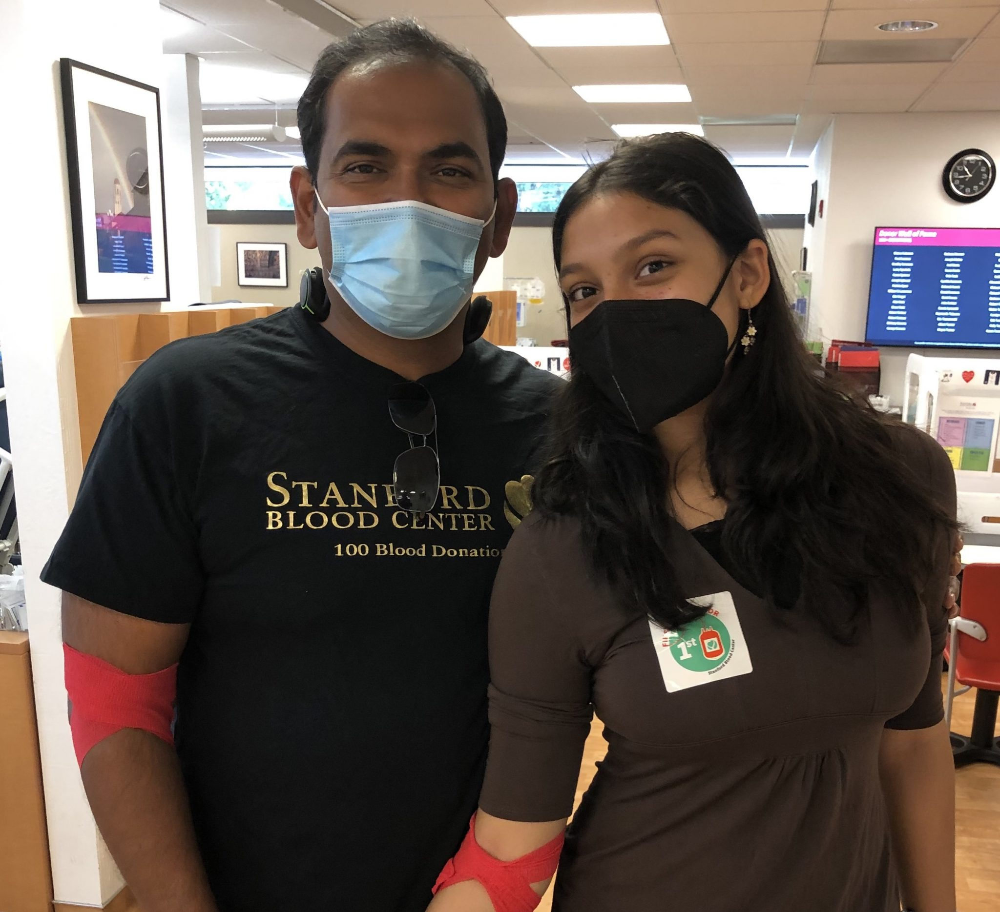
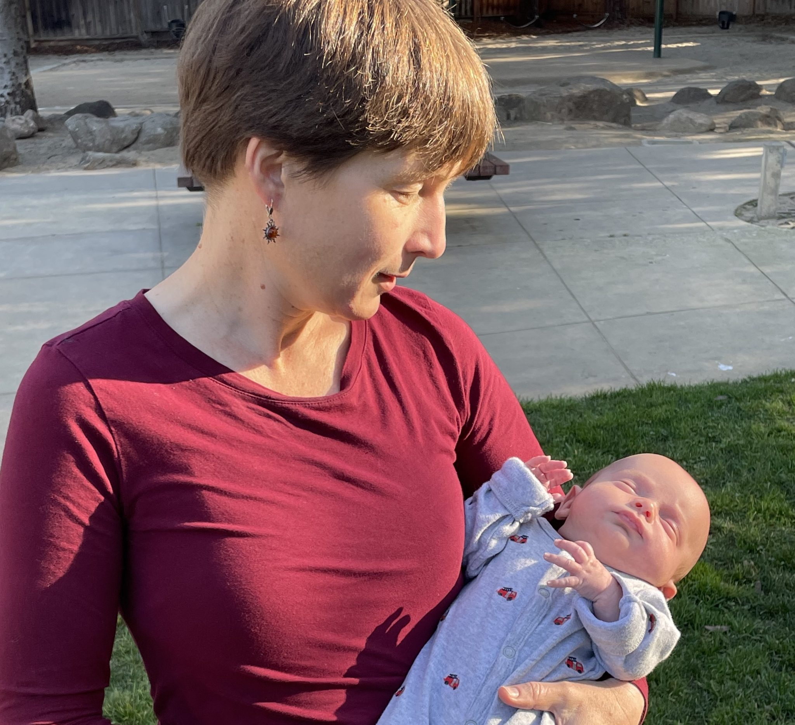
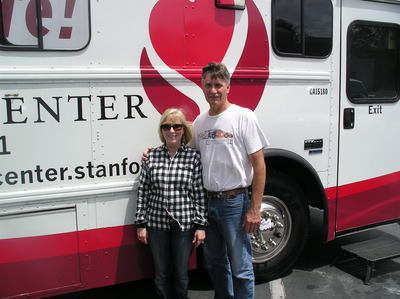
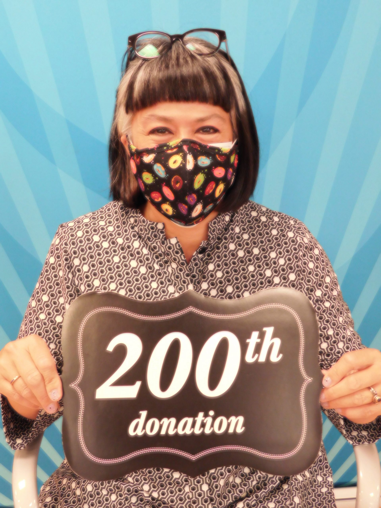

That’s when she got a call no one wants to receive: her dad was in the emergency room. The doctors tested him for what they considered to be worst-case scenario — and it turned out to be just that. After significant strain on his heart, David Gonsalves’ aorta had dissected (torn). His diagnosis was so critical that he had to be life-flighted to UC Davis Medical Center in Sacramento. Felicia quickly drove up to UC Davis to be at her father’s side. “It’s a struggle to watch it happen to a loved one. Panic set in, not knowing what was going to happen to him,” said Felicia. “The waiting was excruciating, and you feel helpless because you’re not able to do anything for him.” Fortunately, her father survived, but it was a harrowing experience. “Honestly, it was a miracle! The doctors told us that most patients with a similar diagnosis don’t survive.” Felicia remembers seeing some of the life-flight crew that took her dad to the hospital come by to check on him a few days later after he was out of ICU. They were so happy to see her dad because they knew from experience that most people who go through this ordeal don’t make it. In fact, his recovery is so rare, that doctors at Barton Memorial Hospital in Lake Tahoe have asked to do a case study on David’s situation. Once her dad was back on his feet, Felicia asked herself what could she possibly do to show her gratitude to all those on his care team who helped her father bounce back and regain his health. “A simple thank-you note wasn’t enough. I could write each and every one of them, but it wouldn’t be able to express how grateful I was for their compassion and kindness,” said Felicia. That’s when she was finally able to muster up enough courage to donate blood. Despite working at SBC, Felicia was always scared to donate blood. In addition to having a fear of needles, she also had particularly tricky veins that made it more challenging to donate. But, after the experience her family went through, she was determined to overcome her fear and make a difference. “The best thank you I could possibly give was to give the gift of life,” she said. Felicia with her father and grandfather. It was also a way to honor her father who was an avid blood donor. David has worked for years at a local elementary school, where he made a habit of donating at mobile blood drives. Though his medical situation has made it impossible for him to donate currently, he still spreads the word about the need for donors and shares his story every chance he gets. David Gonsalves was given a second chance. A chance to spend quality time with family and friends. And a chance to enjoy Father’s Day with his daughter. “It’s always front of mind this time of year,” said Felicia. “I got this time with my dad that others unfortunately don’t always get to experience. So, as a blood donor, the only way I could show thanks was to try to do the same for somebody else.”
 Balaji Iyer recently made his 100th milestone blood donation at our Mountain View center - a moment he had hoped to share with someone very special. Unfortunately, illness delayed his 16-year-old daughter Satvika from making her very first donation that same day. But sometimes things have a funny way of working out. Satvika finally got a chance to donate blood last week, just as we get ready to celebrate Father’s Day! Their donation was a very special gift for this father/daughter duo, and a life-saving gift for someone’s parent or child in need.
 “I’ve been a regular blood donor my whole adult life, and I’ve been humbled to be on the receiving end for a change.” Amber Kerr is many things. A scholar, a university lecturer, a world traveler, a mother of three, an avid blood donor — and, as of late last year, a blood recipient. When Amber first wrote to SBC about her story, it wasn’t in the context of sharing it on our blog. Rather, she asked how soon after her own experience as a patient she would be able to jump back into donating!
 At Standford Blood Center, we love to celebrate our incredible milestone donors and the impact they’ve had on helping support patients in our community. Stan Jensen recently made his 600th donation at our Menlo Park center. Ross Coyle, Public Relations Officer, interviewed the Pacifica resident about what inspires him to donate blood and what keeps him coming back all these years.
At Standford Blood Center, we love to celebrate our incredible milestone donors and the impact they’ve had on helping support patients in our community. Stan Jensen recently made his 600th donation at our Menlo Park center. Ross Coyle, Public Relations Officer, interviewed the Pacifica resident about what inspires him to donate blood and what keeps him coming back all these years.
 Stanford Blood Center (SBC) is honoring the legacy of an incredible member of our community, Midge Zylker, who passed away late last year. Midge was Blood Drive Coordinator for the Rose Garden Community Blood Drives, and was instrumental in establishing the Willow Glen Community Blood Drive and the Zanotto’s Sunnyvale Community Blood Drive as well.
 At Standford Blood Center, we love to celebrate our incredible milestone donors and the impact they’ve had on helping support patients in our community. Glenys Chow recently made her 200th donation at our Mountain View center. Ross Coyle, Public Relations Officer, interviewed the Mountain View resident about what inspires her to donate blood and what keeps her coming back all these years.